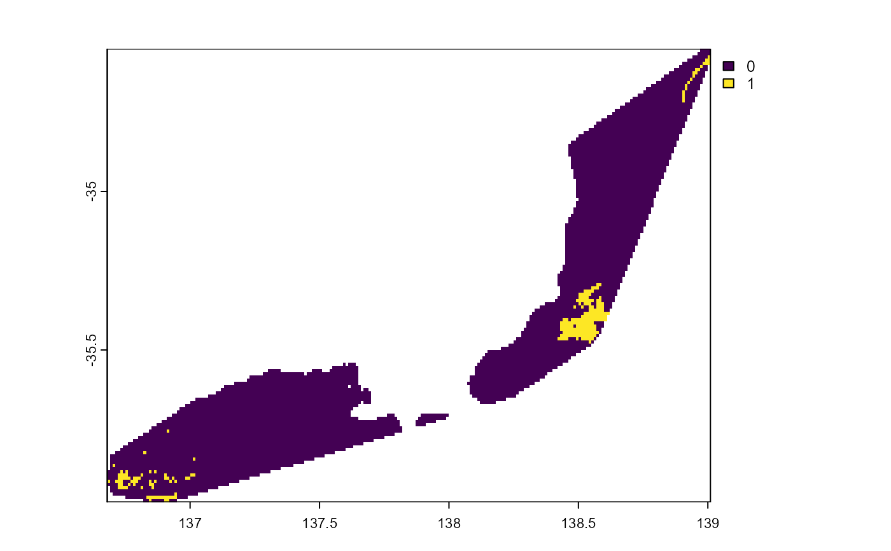
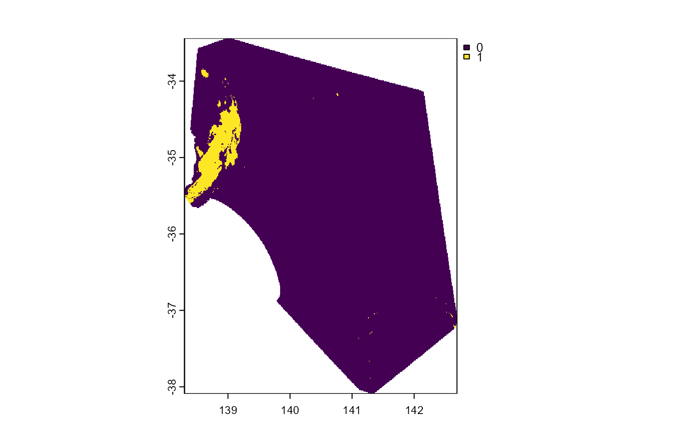
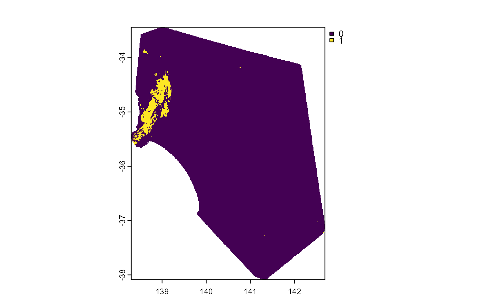

Threshold a previously predicted SDM
Usage
thresh_sdm(
pred_file,
this_taxa = NULL,
threshold,
thresh_file = NULL,
terra_options = NULL,
force_new = FALSE,
do_gc = FALSE,
check_tifs = TRUE
)Arguments
- pred_file
Character. File path of predicted sdm to threshold.
- this_taxa
Character. If left as default
NULLan attempt will be made to extract a taxa name frompred_file- threshold
Numeric. > 0 and < 1. Threshold to apply to the raster stored in the file at
pred_file. Often this value will be available within the result of a call totune_sdm(). e.g.mod <- rio::import("tune.rds")and thenmod$e[[1]]@thresholds$max_spec_sens- thresh_file
Character. Name to give the output threshold. If left as default
NULL,thresh_filewill be set togsub("pred", "thresh", pred_file)- terra_options
Passed to
terra::terraOptions(). e.g. list(memfrac = 0.6)- force_new
Logical. If output files already exist, should they be remade?
- do_gc
Logical. Run
base::rm(list = ls)andbase::gc()at end of function? Useful to keep RAM use down when running SDMs for many, many taxa, especially if done in parallel.- check_tifs
Logical. Check if any output
.tiffiles error onterra::rast()and delete them if they do. Useful after a crash during pred_file.
Value
Character path to threshold file, usually 'thresh.tif'. Output .tif
and .log, written to out_dir.
Examples
# setup -------
out_dir <- file.path(system.file(package = "envSDM"), "examples")
# data ------
extract_thresh <- function(tune, metric, thresh_type = "max_spec_sens") {
tune |>
dplyr::filter(!!rlang::ensym(metric) == max(!!rlang::ensym(metric))) |>
dplyr::pull(!!rlang::ensym(thresh_type))
}
data <- fs::path(system.file(package = "envSDM"), "examples") |>
fs::dir_ls(regexp = "pred\\.tif"
, recurse = TRUE
) |>
tibble::enframe(name = NULL, value = "pred") |>
dplyr::mutate(out_dir = dirname(pred)
, taxa = basename(dirname(out_dir))
, metric = basename(out_dir)
, tune = fs::dir_ls(out_dir, regexp = "full_run.rds")
, tune_mean = purrr::map(tune, \(x) rio::import(x, trust = TRUE)$tune_mean |> dplyr::select(algo, tune_args, auc_po, combo, max_spec_sens))
, thresh = purrr::map2_dbl(tune_mean
, metric
, extract_thresh
)
)
## thresh -------
purrr::pwalk(list(data$pred
, data$thresh
, data$taxa
)
, \(a, b, c) thresh_sdm(pred_file = a
, threshold = b
, this_taxa = c
, thresh_file = "thresh.tif"
#, force_new = TRUE
)
)
#> threshold file: C:/temp/nige/RtmpkDfFu6/temp_libpath57ecc1774b9/envSDM/examples/chg/auc_po/thresh.tif already exists
#> threshold file: C:/temp/nige/RtmpkDfFu6/temp_libpath57ecc1774b9/envSDM/examples/chg/combo/thresh.tif already exists
#> threshold file: C:/temp/nige/RtmpkDfFu6/temp_libpath57ecc1774b9/envSDM/examples/mjs/auc_po/thresh.tif already exists
#> threshold file: C:/temp/nige/RtmpkDfFu6/temp_libpath57ecc1774b9/envSDM/examples/mjs/combo/thresh.tif already exists
## visualise-------
### threshold -------
purrr::walk(data$out_dir
, \(x) fs::path(x, "thresh.tif") %>%
terra::rast() %>%
terra::trim() %>%
terra::plot()
)


